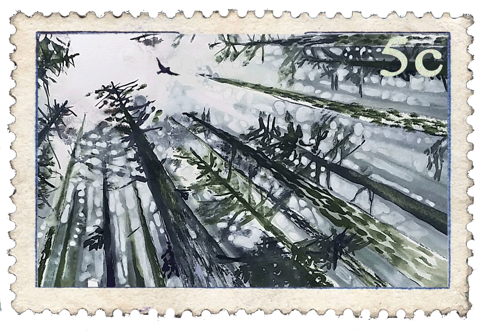

Carnet
de sculptures
Guillaume Varet — Chartreuse
Géants
Les pièces qui dépassent l'homme : un séquoia trop grand à la bonne échelle, un couple né d'un tronc encore debout.


Impromptu
Ce qui arrive sans prévenir : un chapeau trouvé devient oiseau, une bille fendue cache un masque, un chat se met à chanter jouer.


Visages
Le même geste, repris sans fin : tantôt deux fentes et une ligne, tantôt un visage habité jusqu'au moindre pli.


L'atelier
Tout commence dehors. Une bille couverte d'écorce, posée sur un établi de chantier. La tronçonneuse d'abord — puis la meuleuse, pour faire apparaître ce qui était déjà là. Ce que vous voyez ici n'est jamais que ce qui reste, une fois la poussière retombée.

Contact
38134 La Sûre en Chartreuse
06 01 75 79 40